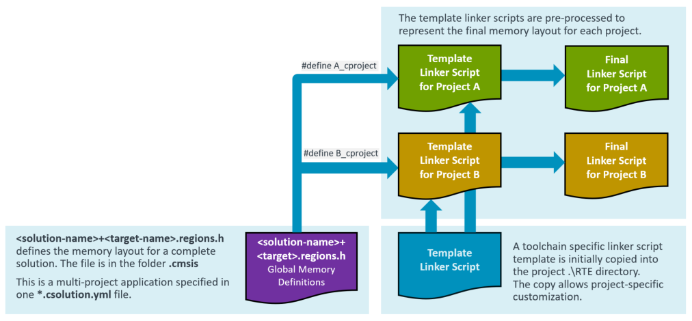
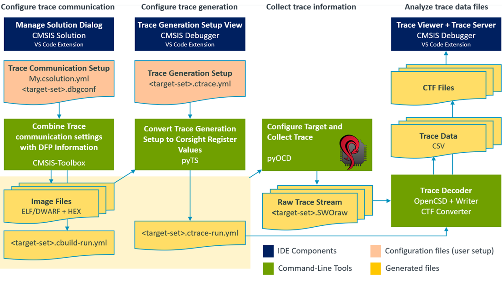
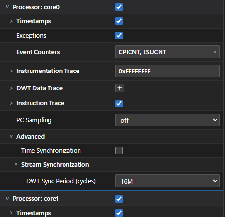

Experimental Features
Experimental features are implemented to iterate on new functionality. Experimental features have limited test coverage and the functionality may change in future versions of the CMSIS-Toolbox without further notice.
Resource Management
The CMSIS-Toolbox version 2.7 implements the experimental features for: - Resource Management
Hardening and finalizing of these features is planned for a later CMSIS-Toolbox version.
In a multi-processor or multi-project application, the target type describes the target hardware. A solution is a collection of related projects, and the target-set defines the projects that are deployed to the target hardware. A project uses a subset of resources (called regions at linker level).
The linker script management is extended for multi-processor or multi-project applications with the following features:
-
When
resources:node is specified in one of the*.cproject.ymlor*.clayer.ymlfiles of a csolution project:- The file
.\cmsis\<solution-name>+<target-name>.regions.his generated. This file contains the global region settings of a solution for one target type. - The file
.\cmsis\<solution-name>+<target-name>.regions.hreplaces theregions_<device_or_board>.hthat is located in the directory./RTE/Device/<device>. Theregions_<device_or_board>.his no longer generated.
- The file
-
A
define: <project-name>_cprojectis always added to the linker script pre-processor (also when noresources:node is used).
The following picture explains the extended linker script management for multi-project applications.

resources:
The resources: node specifies the resources required by a project. It is used at the level of project:, setup:, or layer:. The resources: node is additive; when multiple resources: nodes specify the same region, the size is added.
Note
In a next iteration, the linker script may be generated by the CMSIS-Toolbox and features from uVision to allocate source modules to specific regions may get added. Therefore the resources: node is forward-looking in the way heap and stack are specified.
resources:
regions:
- region: __ROM0 # region name pre-defined in script template: __ROM0..3
size: 0x10000 # specifies region size
# name: ITCM_Flash - maps to physical memory name(s), if missing use PDSC default memory
# address: - absolution address of region; not in scope for 2.7
# startup: - locate startup/vectors to this region; not in scope for 2.7
# align: - alignment restrictions of the regions; not in scope for 2.7
- region: __RAM0 # region name pre-defined in script template: __RAM0..3
size: 0x8000 # specifies region size
heap: 0x2000 # heap size (only permitted region __RAM0)
stack: 0x4000 # stack size (only permitted in region __RAM0)
# name: - maps to physical memory name(s), if missing use PDSC default memory
# - SRAM1
# - SRAM2
# address: - absolution address of region; not in scope for 2.7
# align: - alignment restrictions of the regions; not in scope for 2.7
# sections: - potentially locate sections (requires linker script generation); not in scope for 2.7
# - .text.function
Example <solution-name>+<target-name>.regions.h file
#ifndef USBD_STM32F746G_DISCO_REGIONS_H
#define USBD_STM32F746G_DISCO_REGIONS_H
// *** DO NOT MODIFY THIS FILE! ***
//
// Generated by csolution 2.7.0 based on packs and csolution project resources
// Device Family Pack (DFP): Keil::STM32F7xx_DFP@3.0.0
// Board Support Pack (BSP): Keil::STM32F746G-DISCO_BSP@1.0.0
// Available Physical Memory Resources
// rx ROM: Name: ITCM_Flash (from DFP) BASE: 0x00200000 SIZE: 0x00100000
// rx ROM: Name: Flash (from DFP) BASE: 0x08000000 SIZE: 0x00100000 (default)
// rwx RAM: Name: DTCM (from DFP) BASE: 0x20000000 SIZE: 0x00010000
// rwx RAM: Name: SRAM1 (from DFP) BASE: 0x20010000 SIZE: 0x00020000 (default)
// rwx RAM: Name: SRAM2 (from DFP) BASE: 0x20030000 SIZE: 0x00020000 (default)
// rwx RAM: Name: BKP_SRAM (from DFP) BASE: 0x40024000 SIZE: 0x00001000
// rwx RAM: Name: ITCM (from DFP) BASE: 0x00000000 SIZE: 0x00004000
//--------------------------------------
#ifdef A_cproject
// Resources allocated in A.cproject.yml
#define __ROM0_BASE 0x08000000 /* Memory Name: Flash */
#define __ROM0_SIZE 0x00010000
#define __RAM0_BASE 0x20010000 /* Memory Name: SRAM1 */
#define __RAM0_SIZE 0x00008000
#define __STACK_SIZE 0x00004000
#define __HEAP_SIZE 0x00002000
#endif /* A_cproject */
//--------------------------------------
#ifdef B_cproject
// Resources allocated in B.cproject.yml
#define __ROM0_BASE 0x08010000 /* Memory Name: Flash */
#define __ROM0_SIZE 0x00030000
#define __RAM0_BASE 0x20018000 /* Memory Name: SRAM1+SRAM2 */
#define __RAM0_SIZE 0x00020000
#define __STACK_SIZE 0x00000200
#define __HEAP_SIZE 0x00000000
#endif /* B_cproject */
#endif /* USBD_STM32F746G_DISCO_REGIONS_H */
Question
- Should the
<solution-name>+<target-name>.regions.hfile contain also#definesymbols for the overall available memory, i.e. for a boot loader?
Server Mode
The csolution tool supports the command line argument rpc to initiate a server mode. With this mode rpc commands can be initiated. The first set of commands will be used by the VS Code CMSIS Solution extension to select components and packs for projects and layers.
Refer to github.com/Open-CMSIS-Pack/csolution-rpc for more information.
Zephyr Module Export
This is work in progress and the intended usage is initially for ML models generated for ExecuTorch. However the concept is flexible enough so that it can extend to other software components.
The CMSIS-Toolbox 2.14 allows to export a software layer (defined in *.clayer.yml) into a Zephyr module so that software delivered as CMSIS-Packs can be integrated in Zephyr builds.
A layer is converted to a Zephyr module with the standard Zephyr entry points:
zephyr/module.ymlto declare the module and connect it to CMake/Kconfig integration.Kconfigoptions that expose the available CMSIS-Pack components and allow enabling/disabling them viaCONFIG_...defines.CMakeLists.txt/sources.cmakethat map the selected CMSIS-Pack sources and include paths into the Zephyr build.- Generated compatibility headers (for example
RTE_Components.h/Pre_Include_Global.h) to bridge CMSIS component configuration into the consuming build.
The exported module can then be consumed by a Zephyr application by adding the module path to ZEPHYR_EXTRA_MODULES (or through a west manifest) and enabling the desired CONFIG_... symbols in prj.conf.
Example: the cmsis-to-zephyr-concept ml_inference example shows a minimal end-to-end flow: exporting a layer as a Zephyr module and consuming it from a Zephyr application.
Trace
Target execution data is captured through trace stream channels. The overall process has these steps:
- Configure trace communication (how trace leaves the MCU) with the
target-set:in*.csolution.yml(and optional settings in*.dbgconf). - Configure trace generation (what the MCU produces: ITM, DWT, etc.) with the
*.ctrace.ymlfile. - Collect trace information (debugger receives and records the stream) into raw data files.
- Analyze trace data files (host tools interpret the collected raw trace data files) and generate CSV and CTF files.
This section uses <solution-set> as the combined name of the solution, target-type, and target-set name, for example SDS+AppKit-E8@HIL.
Note
- Trace does not include SEGGER RTT, SystemView, or STDIO UART output. These features use separate data output paths.
Trace Stream Channels
The trace stream channels are configured using the trace: node in target-set: of the *.csolution.yml project file. The following trace stream <channels> may be used:
<channel> |
Description |
|---|---|
| SWO | Serial-Wire Output: one-pin interface that sends trace information using UART or Manchester mode (tbd). |
| TB | Embedded Trace Buffer or Micro Trace Buffer that stores trace information in memory. |
| ER | Event Recorder: uses code annotations that store program events in memory. |
For TB, the trace buffer name is appended to the channel name when present. For example, a trace buffer named MTB uses the TB_MTB channel.
Selecting Trace Buffers
The optional trace-buffer: node under trace: in the debugger: configuration selects a trace buffer. When multiple trace buffers are available, its value must match the name of the selected trace buffer. The trace-sinks: node under debug-topology: in *.cbuild-run.yml lists PDSC tracebuffer elements and their names. The name value may be omitted when exactly one trace buffer is listed without a name.
For example, the following selects the MTB trace buffer:
debug-topology:
trace-sinks:
- serialwire:
- tracebuffer: MTB
- tracebuffer: ETB_0
debugger:
trace:
- trace-buffer: MTB
This selection lets DFP debug sequences use TraceBufferSelected("MTB"), and lets a TraceFlush sequence direct BufferStreamOut to the selected named trace buffer in the debugger.
Trace Formatting
Some trace stream channel types may transport formatted trace data from multiple source streams, e.g. ITM data from multiple processors in the system. For simplicity, the formatter is always enabled in this solution.
| Trace stream channel | Formatter usage |
|---|---|
| SWO | Not supported |
| TB | Always enabled |
| ER | Not supported |
Directory and File Structure
Trace-related files are stored relative to the directory that contains the *.csolution.yml file.
| Directory or File | Created by | Description |
|---|---|---|
. |
User | Contains the *.csolution.yml project file. |
.cmsis/<solution-set>.ctrace.yml |
CMSIS-Debugger | User trace intent and "solution-set specific" trace capture configuration. |
.trace/<solution-set>.ctrace-run.yml |
pyTS | Generated trace run information, including resolved symbols and register values. |
.trace/<solution-set>.<channel>.raw |
pyOCD | Raw trace data files, specific to a <channel> (SWO, TB, or ER). |
.trace/<solution-set>.<channel>.csv |
ctrace | CSV files that represent raw trace data files. |
.trace/<solution-set>.ctf/ |
ctrace | Directory for CTF files such as metadata, stream_0, and stream_1. |
The file .cmsis/<solution-set>.ctrace.yml configures the trace generation. It is created or updated by the user interface of the CMSIS-Debugger Trace View.
The pyTS utility resolves symbol-based settings in *.ctrace.yml against the ELF/DWARF information of the active <solution-set> and generates the register setup for the hardware configuration. The output is the file .trace/<solution-set>.ctrace-run.yml which is used by the debugger for register setup in target hardware. During trace analysis the information of this file connects the raw trace data back to the *.ctrace.yml configuration.
Raw trace streams are stored as binary files, for example .trace/<solution-set>.SWO.raw. The ctrace utility converts raw trace data files into CSV and CTF for viewers and analysis tools.
Name Conventions
Location
Locations can be symbols or numeric addresses. An additional project or path to an image file may be specified.
| Location Form | Description |
|---|---|
symbol |
Finds matching symbols in all available symbol files. |
"sourcefile"::symbol |
Finds matching symbols in a source file across all available symbol files. |
project\|symbol |
Finds matching symbols in symbol files from a specific project. |
project\|"sourcefile"::symbol |
Finds matching symbols in a source file from a specific project. |
file-path\|symbol |
Finds matching symbols in symbol files from a specific image file. |
file-path\|"sourcefile"::symbol |
Finds matching symbols in a source file from a specific image file. |
ToDo: examples
References
References identify a node in the ctrace.yml that generated information in ctrace-run.yml. These nodes are used for diagnostics and for linking trace analysis results back to the trace setup.
Examples:
ref: <pname>/data#2 # refers to pname section, `data:` node, list node #2
ref: data#2 # `data:` node, list node #2
ref: instruction:start#0 # `instruction:` node, `start:` node, list node #0
ref: <pname>/tracehalt#0 # `tracehalt:` node, list node #0 for the named processor
Tools and Extensions
The trace workflow is split across the command-line tools and VS Code extensions as shown below.

| Tool or Extension | Input | Output | Description |
|---|---|---|---|
| Arm CMSIS Solution | *.csolution.yml, optional .cmsis/*.dbgconf |
*.cbuild-run.yml |
Generates the run and debug information consumed by debuggers. |
| Arm CMSIS Debugger Trace Generation Setup View |
.cmsis/*.ctrace.yml |
Updated .cmsis/*.ctrace.yml |
Configures trace capture. |
| pyTS | .cmsis/*.ctrace.yml, ELF/DWARF symbols |
.trace/*.ctrace-run.yml |
Resolves symbols and generates CoreSight trace register values. |
| pyOCD | *.cbuild-run.yml, .trace/*.ctrace-run.yml |
Raw trace data files in .trace/ |
Programs trace registers and captures trace streams during the debug session. |
ctrace |
Raw trace data files, .trace/*.ctrace-run.yml |
CSV, CTF files, Trace Compass XML Analysis file | Generates CSV files (human readable) and CTF files |
| Trace Viewer for VS Code and VS Code Trace Server |
CTF files, Trace Compass XML Analysis file | Trace viewer panes | Visualizes the CTF output in VS Code. |
Interactive Debug Workflow:
It is possible to change the Trace Generation Setup during debugging. For this workflow:
- pyTS generates a new
*.ctrace-run.ymlfile. - pyOCD reloads this
*.ctrace-run.ymlfile and deletes existing Raw Trace Stream files when changes are detected and a new trace collection is started.
CI Workflow:
CI requires a prepared .cmsis/<solution-set>.ctrace.yml file. This file may be under source control or maintained manually.
Trace Buffer Workflow:
Existing Raw Trace Stream files containing trace buffer data are deleted each time the trace buffer is captured, for example after hitting a breakpoint. This prevents gaps that could otherwise be introduced by concatenating capture runs in which the trace buffer has wrapped around.
Configuration Files
Trace setup is split between target infrastructure configuration and capture configuration.
| Configuration File | Description |
|---|---|
*.csolution.yml |
Selects the solution-set and debug adapter. It may also reference solution-set specific debugger configuration files. |
.cmsis/*.dbgconf |
Optional solution-set specific debugger configuration, for example trace clock, trace pins, ETB setup, and related hardware setup. |
.cmsis/<solution-set>.ctrace.yml |
User trace generation setup. This file defines which data, events, ITM channels, PC samples, or instruction trace streams are enabled. |
.trace/<solution-set>.ctrace-run.yml |
Generated trace run configuration. This file contains resolved symbols and ordered register accesses for pyOCD or other debug tools. |
The trace run configuration (in .trace/<solution-set>.ctrace-run.yml) is written to target trace resources such as DWT, ITM, ETM, MTB, or PMU registers. pyOCD programs these registers after executing the TraceCapture debug sequence and enabling capture in the attached debug unit, but before running the CPU. When pyOCD detects an updated *.ctrace-run.yml file, it writes the disabled feature values before applying the active register setup and deletes previous raw trace data files.
Based on these settings pyOCD captures raw trace data files in the directory .trace. These raw trace data files are converted by the ctrace utility.
In a later step, a preprocessing tool may generate .trace/README.md with setup instructions and code snippets that can be inserted in the application code.
File Structure of *.ctrace.yml
The *.ctrace.yml file starts with the node ctrace: and contains the trace capture settings for one solution-set.
Note
Cortex-M processors and the DWT, ITM, ETM, MTB, and PMU implementations differ in ways that affect the available configuration options. The pyTS tool uses the *.cbuild-run.yml file to discover the processor and implemented capabilities and rejects incompatible settings.
ctrace: |
Content | |
|---|---|---|
generated-by: |
Optional | Tool and version that generated or last updated the file. |
setup: |
Required | Setup for each processor. |
setup: |
Content | |
|---|---|---|
- pname: |
Optional | Section applies to a processor name (required for multi-processor systems). |
disable: |
Optional | When set, this list node is ignored; useful for testing. |
timestamps: |
Optional | Enables timestamps in the emitted trace streams. |
timesync: |
Optional | Configures time synchronization between trace streams. |
data: |
Optional | DWT data trace configuration. |
exceptions: |
Optional | DWT exception trace configuration. |
events: |
Optional | DWT or PMU event trace configuration. |
itm: |
Optional | ITM channel configuration. |
instructions: |
Optional | ETM or MTB instruction trace configuration. |
pcsampling: |
Optional | DWT PC sampling configuration. |
synchronization: |
Optional | Trace synchronization packet period configuration. |
tracehalt: |
Optional | Hardware trigger conditions that stop the selected trace sink. |
Example:
ctrace:
created-by: CMSIS-Debugger v1.4.0
setup:
- pname:
# disable: # disables trace without need to remove settings
timestamps:
clock: 24000000
timesync:
ITM: 8192
data:
- location: mysimple
- location: App|0x20001000
access: RW
size: 0x100
output: PC
- location: App|"main.c"::sample_counter
access: R
output: PC
match:
value: 0x00001234
size: 4
exceptions:
events:
- event: CPICNT
- event: LSUCNT
itm:
enable: 0x0000000F
privileged: 0x0
timestamps:
When timestamps: is present, timestamp generation is enabled in the trace stream. ITM uses local timestamps with a synchronous timestamp source. ETM uses its cycle counter for local processor-cycle timing where supported.
timestamps: |
Content | |
|---|---|---|
clock: |
Optional | Timestamp clock frequency in Hz. |
itm-prescaler: |
Optional | ITM timestamp prescaler: 1 (default), 4, 16, 64. |
The timestamp clock typically is the processor clock.
timesync:
The timesync: node controls insertion of global timestamps for correlation across processors. This applies to ITM and ETM trace streams. It requires a shared system timestamp source. The timestamp generator is configured with the trace communication settings in *.csolution.yml and optionally *.dbgconf.
timesync: |
Content | |
|---|---|---|
ITM: |
Optional | Global timestamp mode: off (default), packet, 128, or 8192. |
ETM: |
Optional | Global timestamp mode: off (default) or on. |
With packet, the ITM generates a timestamp after each trace packet if its output FIFO is empty. With 128 or 8192, the ITM requests a global timestamp approximately every 128 or 8192 global timestamp clock cycles.
data:
The data: node configures DWT data trace. DWT comparator resources are limited and shared with data access breakpoints, trigger conditions, and trace start/stop logic.
data: |
Content | |
|---|---|---|
- location: |
Required | Symbol or numeric address location to trace. |
label: |
Optional | User-defined short label for Trace Compass. |
access: |
Optional | Access type: W, R, or RW. Default: W. |
size: |
Optional | Number of bytes in the traced range. Default: sizeof(symbol), 4 for numeric addresses. |
output: |
Optional | Trace output mode (see table below). Default: value. |
match: |
Optional | Value match condition. When present, trace is emitted only for matching accesses. |
match: |
Content | |
|---|---|---|
value: |
Required | Value to match. |
size: |
Optional | Number of bytes to compare. Allowed values: 1, 2, 4. Default: 4. |
output: |
Description |
|---|---|
value |
Emits the value of the access. |
offset |
Emits the address offset. This is useful when tracing an address range. |
PC |
Emits the PC value that caused the access. |
match |
Emits only the comparator ID of a match. This requires Armv8-M and saves trace bandwidth. |
PC+value |
Emits PC and value. |
offset+value |
Emits address offset and value. |
PC+offset |
Emits PC and address offset. This requires Armv8-M. |
Note
size: values greater than 4 may require two DWT comparators, depending on the DWT architecture. A match: condition can also require two DWT comparators.
exceptions:
The exceptions: node enables DWT exception trace. This does not enable ETM exception trace.
events:
The events: node enables DWT or PMU event trace for all processors or for a specific processor.
events: |
Content | |
|---|---|---|
- event: |
Required | Event selector. |
Supported DWT event selectors include CYCCNT, CPICNT, EXCCNT, SLEEPCNT, LSUCNT, and FOLDCNT.
Example:
events:
- event: CPICNT
- event: FOLDCNT
- event: LSUCNT
itm:
The itm: node enables ITM channels.
itm: |
Content | |
|---|---|---|
- enable: |
Required | ITM channel bit mask. |
privileged: |
Optional | Privileged access only mask by blocks of eight channels. Default: 0. |
Each bit in enable: represents one ITM channel.
Each bit in privileged: represents a block of eight channels, i.e. value 0x2 configures that access to ITM channles 8-15 must be privileged.
Note
ITM channel 0 is often used for printf output. However, the trace analysis components treat channel 0 like any other ITM channel.
It is up to the individual debug tool to route the printf data to an output window or a debug console.
pcsampling:
The pcsampling: node enables DWT PC sampling.
pcsampling: |
Content | |
|---|---|---|
period: |
Optional | Sampling period in CPU cycles. |
Supported values for period: 0 (off), 64, 128, 256, ..., 16384. Default: 0.
synchronization:
The synchronization: node specifies behavior and frequency of synchronization packet generation.
synchronization: |
Content | |
|---|---|---|
DWT: |
Optional | Frequency off, 16M, 64M, 256M processor cycles. Default: 16M. |
sync-on-run: |
Optional | Explicitly request synchronization packets at start of a step or run. Supported values: true (default) and false. |
Note
For currently supported ETMs, the synchronization period is fixed to 1024 bytes of emitted ETM data.
sync-on-run: is preserved in *.ctrace-run.yml under ctrace-setup: so that pyOCD can apply the requested synchronization behavior. It only applies to trace sources with enabled synchronization and that do not always insert synchronization packets at start of a step or run.
The debugger requests DWT/ITM synchronization packets by toggling bits 24, 26, and 28 of DWT_CYCCNT twice after setting up trace capture and before a processor step or run. These are the bits selectable by DWT_CTRL.SYNCTAP. The second toggle restores the original cycle counter value. Do not toggle other bits to avoid side effects.
Example:
synchronization:
DWT: 256M
sync-on-run: false # Skip manual DWT synchronization at start of run
instructions:
The instructions: node enables instruction trace generated by ETM or MTB. Availability depends on the target processor and system implementation. See Configure Trace Generation for processor-specific capabilities. Instruction trace is only available for TB configurations. It is not required for the initial implementation.
Note
MTB support is not part of the first instruction trace implementation.
The instructions: node enables ETM instruction trace with the following fixed base configuration.
| Feature | ETMv3 | ETMv4 |
|---|---|---|
| Conditional non-branch instructions | Always on | ETMv4_TRCCONFIGR[10:8] = 0 (none; no OpenCSD support) |
| Branch broadcasting | ETMv3_ETMCR[8] = 0 (off) |
ETMv4_TRCCONFIGR[3] = 0 (off) |
| Return-stack compression | Not available | ETMv4_TRCCONFIGR[12] = 1 (on) |
| Always trace reset | Not available | ETMv4_TRCVICTLR[10] = 1 (on) |
| Always trace system errors | Not available | ETMv4_TRCVICTLR[11] = 1 (on) |
| Trace Thread mode | Always on | ETMv4_TRCVICTLR[16] = 0 (on) |
| Trace Handler mode | Always on | ETMv4_TRCVICTLR[19] = 0 (on) |
| Periodic stream synchronization | Always on | Always on |
For currently supported ETMs, the read-only registers ETMv3_ETMSYNCFR and ETMv4_TRCSYNCPR have fixed values that give a synchronization period of 1024 emitted trace bytes.
The following configurations are excluded from the base configuration and are configurable through the linked settings.
| Feature | ETMv3 | ETMv4 | Setting |
|---|---|---|---|
| Cycle Count | Not available | ETMv4_TRCCONFIGR[4], ETMv4_TRCCCCTLR[11:0] |
timestamps: |
| Global timestamps | ETMv3_ETMCR[28] (Cortex-M3(r2p1)/M4/M23) |
ETMv4_TRCCONFIGR[11] |
timesync: |
instructions: |
Content | |
|---|---|---|
start: |
Optional | Conditions that start instruction trace. |
stop: |
Optional | Conditions that stop instruction trace. |
start: and stop:
start: and stop: contain condition entries that start or stop instruction trace generation without stopping the processor or trace sink. It uses direct connections from DWT to ETM. Multiple conditions within each list are logically OR-combined.
Instruction trace is initially stopped if start: conditions exist. Otherwise it is initially enabled. Without stop: conditions, tracing continues after starting.
The number of allowed conditions depends on the available DWT comparators and ETM resources. See Configure Trace Generation for processor-specific capabilities.
For ETM, each start: or stop: entry generates:
- One or more
refnodes with typedwtto program the condition and, on Armv8-M, enable DWT Data Trace Match packets where supported. - One
refnode to program ETM Start/Stop input selection. Forstart:, it additionally setspacket.
The start: ETM ref node uses type etmv3 or etmv4 with:
| Field | ETMv3 | ETMv4 |
|---|---|---|
packet |
[I_SYNC, I_SYNC_CYCLE] |
I_TRACE_ON |
index |
1 |
See an example here.
Note
start:andstop:do not use cross-triggers to spare them for other debug features.start:andstop:indications cannot be traced back to the exact condition because restart packets provide no identifying hints.start:andstop:are experimental and may change in future versions.
tracehalt:
The tracehalt: node contains condition entries that stop capture for all streams into the connected trace sink without stopping the processor. It uses direct connections from DWT to ETM. Multiple conditions for a single processor are logically OR-combined.
tracehalt: requires an ETM and a trace sink that supports stopping on trigger signals. It is not available with SWO output. The number of allowed conditions depends on the available DWT comparators and ETM resources. See Configure Trace Generation for processor-specific capabilities.
Each tracehalt: entry generates:
- One or more
refnodes with typedwtto program the condition and, on Armv8-M, enable DWT Data Trace Match packets that identify the matching comparator. - One
refnode to program ETM condition selection and inject a packet into the ETM stream to identify the stream and processor. It must enable and configure the ETM using masked register writes to preserve the bits controlling instruction trace emission. - One
refnode with typetriggerto program ETM condition selection and trigger logic. Thetriggerpacket is generated by the trace sink outside the individual trace streams and has no stream ID.
The ETM ref node uses:
type |
packet |
index |
|---|---|---|
etmv3 |
TRIGGER |
|
etmv4 |
I_EVENT |
0 |
The ETM tracehalt: ref node requires an active ETM decoder for the referenced stream to process the TRIGGER (ETMv3) or I_EVENT (ETMv4) packets emitted into that stream. The decoder is required even when instructions: is disabled.
See an example here.
Note
tracehalt:does not use cross-triggers to spare them for other debug features.tracehalt:does not requireinstructions:to be enabled.tracehalt:with ETMv4 must always use event0to send an ATB trigger to the trace sink.
Conditions
The nodes start:, stop:, and tracehalt: may contain a condition list that is logically OR-combined. They have the following form.
start:, stop:, tracehalt: |
Content | |
|---|---|---|
- location: |
Required | Code symbol, data symbol, or numeric address location used as the trace condition. |
access: |
Optional | Access type: X, R, W, or RW. Defaults to X for code symbols, and to W for data symbols or numeric addresses |
size: |
Optional | Number of bytes in the condition range. Defaults to sizeof(symbol) for symbols and 4 for numeric addresses. |
match: |
Optional | Value match condition for data symbols or numeric addresses. |
match: |
Content | |
|---|---|---|
value: |
Required | Value to match. |
size: |
Optional | Number of bytes to compare. Allowed values: 1, 2, 4. Default: 4. |
File Structure of *.ctrace-run.yml
The *.ctrace-run.yml file starts with the node ctrace-run:. It is generated from *.ctrace.yml, *.cbuild-run.yml, and ELF/DWARF symbol information. This file is a generated artifact and should not be edited manually.
ctrace-run: |
Content | |
|---|---|---|
generated-by: |
Optional | Tool and version that generated the file. |
ctrace-setup: |
Optional | Copy of setup node in the *.ctrace.yml file. |
ctrace-disable: |
Required | Per-processor register values that disable trace features before applying ctrace-refs:. |
ctrace-caps: |
Optional | Per-processor core types and read-only identification and capability register values for trace decoders. |
ctrace-images: |
Optional | Image files for instruction reconstruction. |
ctrace-refs: |
Required | List of references in the *.ctrace.yml file. |
The ctrace-setup node uses the same format as the setup node in the *.ctrace.yml file and preserves the original user input for consumers of the *.ctrace-run.yml file. Consumers may read settings that do not resolve to a ref or register write. For example, the ctrace decoder uses timestamps:clock as a trace-formatting hint, while pyOCD reads synchronization:sync-on-run to control built-in trace-capture behavior.
The ctrace-disable: node contains register values that disable trace features before applying ctrace-refs:. Its regs: entries use the register access format. Multi-processor entries require pname:, while single-processor entries omit it.
ctrace-disable: |
Content | |
|---|---|---|
- pname: |
Optional | Processor name. |
regs: |
Required | Register writes that disable trace features for this processor. |
The ctrace-caps: node contains processor core types and read-only identification and capability register values supplied by pyTS. Multi-processor entries require pname:, while single-processor entries omit it. Its regs: entries use the identification register format under Register Accesses.
ctrace-caps: |
Content | |
|---|---|---|
- pname: |
Optional | Processor name. |
core: |
Required | Processor core type, copied from system-resources:processors:core: in *.cbuild-run.yml. |
regs: |
Required | Read-only identification and capability register values for this processor. |
These values provide the implementation information required, for example, to configure the OpenCSD ETM decoder used in the ctrace utility. Examples include:
- ETMv3:
ETMv3_ETMIDR,ETMv3_ETMCCER. - ETMv4:
ETMv4_TRCIDR0–ETMv4_TRCIDR2andETMv4_TRCIDR8–ETMv4_TRCIDR13.
The ctrace-images: node lists image files available to the ctrace utility to reconstruct instruction traces. File paths are relative to *.ctrace-run.yml. Multi-processor entries require pname:, while single-processor entries omit it.
ctrace-images: |
Content | |
|---|---|---|
- file: |
Required | Specifies the file name. |
type: |
Required | Specifies the file type (see below). |
pname: |
Optional | Image belongs to processor in a multi-core system. |
The type: value is elf for ELF files (.elf or .axf) or hex for Intel HEX files. Addresses in HEX files must be the code addresses at execution time, which can differ from the addresses in the load regions.
The ref: node references the trace generation configuration in the file *.ctrace.yml and contains register values that represent the setup for trace sources. The regs: entries use the register access format. A single-core system has no pname: value; a multi-processor always includes a pname: value in the ref: node.
ctrace-refs: |
Content | |
|---|---|---|
- ref: |
Required | Reference to a node in the *.ctrace.yml file that generated the register setup. |
type: |
Required | Trace output type. |
packet: |
Optional | Packet type or array of packet types produced by this reference, within the protocol selected by type. Supported for etmv3 and etmv4. |
pname: |
Optional | Processor name the reference resolves to for multi-core systems. |
stream: |
Optional | Stream ID (CoreSight ATB ID). |
index: |
Optional | Index or list of indices. See detailed usage here. |
info: |
Optional | Additional information (for example alignment extension). |
warning: |
Optional | Warning message. |
error: |
Optional | Error message when setup cannot be completed. |
label: |
Optional | User-defined short label for Trace Compass |
address: |
Optional | Resolved address for the setting. May be resolved from a symbol. |
size: |
Optional | Size, in bytes, of the capture data. May be extracted from symbol information. |
symbol-file: |
Optional | Path to the symbol file used in this reference, relative to *.ctrace-run.yml. |
data-type: |
Optional | Type of displayed data: unsigned, signed, or float. Default: unsigned. |
regs: |
Optional | Register setup. |
The trace packet types are: dwt, event, exception, itm, pmu, overflow, pcsample, global_ts, etmv3, etmv4, trigger. The decoder-only error type has no setting reference.
The etmv3 and etmv4 types on instructions: and tracehalt: ref nodes select the ETM protocol for decoding the referenced stream. ETM types may use packet: to identify individual packet types within the ETM protocols.
Note
The ETM types and their packet descriptions are experimental and may change in future versions.
Each of the info:, warning:, and error: nodes accepts either a string or a list of strings, allowing multiple messages to be represented separately.
Multiple ref entries may reference the same configuration node when it generates setups for multiple streams. The combination of ref and stream identifies each generated setup.
The data-type in combination with size provides a hint for the display format. Other information required for generating CTF data can be extracted from the referenced setting node in the ctrace-setup: section.
size can be extracted from symbol information or provided in the ctrace file. If both are present, user input takes precedence.
index:
The use of index: depends on the combination of type:, packet:, and the setting referenced by ref:.
type: |
packet: |
ref: setting |
Usage of index: |
|---|---|---|---|
dwt |
data: |
Number or array of DWT comparators allocated for the data-trace entry. | |
dwt |
instructions:start:, instructions:stop:, or tracehalt: |
Number or array of DWT comparators allocated for the condition. | |
itm |
itm: |
Number or array of enabled ITM channels. | |
etmv3 |
[I_SYNC, I_SYNC_CYCLE] |
instructions:start: |
I-sync reason code, always 1 for start:. |
etmv4 |
I_EVENT |
tracehalt: |
ETMv4 event number, always 0 for tracehalt:. |
Register Accesses
The ctrace-run.yml file contains the disabled register values and active register setup required for trace generation, along with read-only identification register values for trace decoders. It does not include enable sequences required by the Arm processor to access these registers. The debugger (pyOCD) has knowledge about architecturally defined trace components (listed in the table below) and therefore generates the right sequences, potentially with timeouts.
| Trace Component | Base Address | Description |
|---|---|---|
ITM |
0xE0000000 |
Instrumentation Trace Macrocell. |
DWT |
0xE0001000 |
Data Watchpoint and Trace unit. |
PMU |
0xE0003000 |
Performance Monitoring Unit. |
ETMv3 |
0xE0041000 |
Embedded Trace Macrocell, architecture version 3. |
ETMv4 |
0xE0041000 |
Embedded Trace Macrocell, architecture version 4. |
Register names use the component prefix followed by an underscore, for example ITM_TCR, ETMv3_ETMCR, or ETMv4_TRCCONFIGR.
regs: entries under ctrace-disable: and ctrace-refs: describe register writes and have the following format:
regs: |
Content | |
|---|---|---|
- name: |
Required | Symbolic name of the register. |
value: |
Required | Value to write in this register. |
mask: |
Optional | Bit mask for value write (default: 0xFFFFFFFF). |
When applying ctrace-disable: writes to DWT comparators, the debugger preserves active watchpoints.
regs: entries under ctrace-caps: contain read-only identification and capability values. They are for example used to configure a trace decoder.
regs: |
Content | |
|---|---|---|
- name: |
Required | Symbolic name of the register. |
value: |
Required | Read-only register value supplied by pyTS. |
Examples
A generic example introducing the main concepts.
ctrace-run:
generated-by: pyTS v0.0
ctrace-setup:
synchronization:
sync-on-run: false # Read by pyOCD; not a register write
ctrace-disable:
- pname: core0
regs:
- name: ITM_TCR
value: 0x00000000
mask: 0x00000006 # Disable timestamp and synchronization generation
- name: ITM_TER0
value: 0x00000000 # No mask: disable all 32 ITM channels
ctrace-caps:
- pname: core0
core: CM4
regs:
- name: ETMv3_ETMIDR # ETMv3
value: 0x4114F250
ctrace-images:
- file: ../out/Blinky/Target/Debug/Blinky.axf
type: elf
pname: core0
ctrace-refs:
- ref: core0/itm
pname: core0
type: itm # packet types
stream: 1 # stream id
index: 0 # ITM channel #0
regs:
- name: ITM_TER0
value: 0x00000001
- name: ITM_TPR
value: 0x00000001
mask: 0x0000000f
- name: ITM_TCR
value: 0x00010000
mask: 0x007f0000
- ref: data#0
type: dwt
stream: 1 # stream id
error: cannot find symbol
- ref: data#1 # symbol location
type: dwt
address: <symbol address>
size: <symbol size>
symbol-file: <symbol file used>
data-type: unsigned
stream: 1 # stream id
index: [0, 1] # allocated DWT comparators #0 and #1
regs:
- name: DWT_COMP0
value: 1
mask: 0xFF
- name: DWT_COMP1
value: 2
- ref: core0/timestamps
type: itm
pname: core0
stream: 1
regs:
- name: ITM_TCR
value: 0x00000002
mask: 0x00000002
# ETM timestamp and instruction-record types remain to be specified.
Note
The processor itm reference configures the ITM ATB stream ID. It may be generated even when no ITM channels are enabled.
Trace Start / Stop Example
Example of Trace Start / Stop programming for a Cortex-M4 processor with ETMv3.
ctrace-refs:
- ref: instructions:start#0
type: dwt
index: 0 # DWT Comparator 0
regs:
- name: DWT_COMP0
value: 0x00008000
- name: DWT_MASK0
value: 0x00000002 # Ignore address bits [1:0]: 4-byte range
- name: DWT_FUNCTION0
value: 0x00000008 # Assert CMPMATCH[0] on instruction-address match
- ref: instructions:start#0
type: etmv3
packet: [I_SYNC, I_SYNC_CYCLE]
stream: 1 # ETM stream ID 1
index: 1 # I-sync reason: tracing enabled
regs:
- name: ETMv3_ETMTEEVR
value: 0x0000006F # TraceEnable enabling event: always TRUE
- name: ETMv3_ETMTECR1
value: 0x02000000 # Enable Start/Stop control
- name: ETMv3_ETMSR
value: 0x00000000 # Initial Start/Stop state: stopped
mask: 0x00000004
- name: ETMv3_ETMTESSEICR
value: 0x00000001 # Start on DWT comparator input 0
mask: 0x00000001
- ref: instructions:stop#0
type: dwt
index: 1 # DWT Comparator 1
regs:
- name: DWT_COMP1
value: 0x00008040
- name: DWT_MASK1
value: 0x00000002 # Ignore address bits [1:0]: 4-byte range
- name: DWT_FUNCTION1
value: 0x00000008 # Assert CMPMATCH[1] on instruction-address match
- ref: instructions:stop#0
type: etmv3
stream: 1
regs:
- name: ETMv3_ETMTESSEICR
value: 0x00020000 # Stop on DWT comparator input 1
mask: 0x00020000
Trace Halt Example
Example of Trace Halt programming for a v8-M based processor with ETMv4.
ctrace-refs:
- ref: tracehalt#0
type: dwt
stream: 2 # ITM/DWT stream ID 2
index: 2 # DWT Comparator 2
regs:
- name: DWT_COMP2
value: 0x24000030
- name: DWT_FUNCTION2
value: 0x00000825 # Emit match packet on word write and assert CMPMATCH[2]
- ref: tracehalt#0
type: etmv4
packet: I_EVENT
stream: 1 # ETM stream ID 1
index: 0 # ETMv4 Event 0
regs:
- name: ETMv4_TRCRSCTLR2
value: 0x00010004 # Resource Selector 2 selects DWT comparator input 2
- name: ETMv4_TRCEVENTCTL0R
value: 0x00000002 # Event 0 selects Resource Selector 2
mask: 0x000000FF
- name: ETMv4_TRCEVENTCTL1R
value: 0x00000001 # INSTEN[0]: generate an ETM Event packet
mask: 0x00000001
- ref: tracehalt#0
type: trigger
regs:
- name: ETMv4_TRCRSCTLR2
value: 0x00010004 # GROUP=1, SELECT[2]=1: DWT comparator 2, Not Inverted
- name: ETMv4_TRCEVENTCTL0R
value: 0x00000002 # Event 0 selects resource selector 2
mask: 0x000000FF
- name: ETMv4_TRCEVENTCTL1R
value: 0x00000800 # ATB: send a trigger to the trace sink
mask: 0x00000800
Initial Implementation
The initial implementation focuses on pyOCD with SWO UART and interactive operation in CMSIS-Debugger.
Subsequent releases may extend this initial solution to:
- Instruction trace using ETM or MTB.
- Event Recorder.
- CI workflow automation.
Remaining Design Questions
- Cross-trigger functionality will be represented later (potentially in
*.ctrace.yml). - What are system wide settings? How are they represented? What trace component is configured with such settings?
Out-of-Scope
- SEGGER RTT, SystemView, and STDIO UART output are not part of trace capture and use separate output paths.
Configure Trace Generation
The file .cmsis/<solution-set>.ctrace.yml is the user-facing configuration file for the trace generation. The CMSIS-Debugger implements a graphical user interface that is shown below. Each processor has a separate configuration section.

The available options in the user interface depend on the Cortex-M processor and on the selected trace stream channel that is used to obtain trace. Depending on the processor implemention, option setting may get rejected at the level of pyTS or pyOCD.
| Option | M0 | M0+ | M23 | M3, M4 | M7, M33 | M52, M55, M85 |
|---|---|---|---|---|---|---|
| Timestamps | - | - | - | yes | yes | yes |
| Exceptions | - | - | - | yes | yes | yes |
| Event Counters | - | - | - | yes | yes | yes |
| PMU Event | - | - | - | no | no | yes |
| Instrumentation Trace | - | - | - | yes | yes | yes |
| Instruction Trace | - | with TB | with TB | with TB | with TB | with TB |
| DWT Comparators (total) | 2 | 2 | 4 | 4 | 4 | 8 |
| – DWT Data Trace | - | - | - | 4 | 4 | 4 |
| – Start, Stop | - | 2 | 4 | 4 | 4 | 8 |
| – Trace Halt | - | - | 2 | 2 | 4 | 8 |
| PC Sampling | - | - | - | yes | yes | yes |
| Time Synchronization | - | - | - | yes | yes | yes |
| Stream Synchronization | - | - | - | yes | yes | yes |
Note
- The available Event Counters depend on the Cortex-M processor.
- ETM support is limited to instruction trace.
- The DWT comparators available for
DWT Data Trace,Start, Stop, andTrace Haltare shared, so the total number of available comparators is not the sum of the values in these rows. - Linked conditions can require additional DWT comparators for any of these features.
- An ETMv4 resource selector can OR all available PE inputs. An event selects one selector or a Boolean-combined selector pair.
- M52, M55, M85 use the first 4 DWT comparators for data trace.
Trace Haltadditionally requires a supported ETM-to-sink trigger path.
Note
Trace configuration through *.ctrace.yml and the Trace Generation dialog is not designed to coexist with other user-provided programming of target trace registers.
pyTS Utility
The pyTS utility generates the file .trace/<solution-set>.ctrace-run.yml. It performs the following steps:
- Reads the file
<name>.cbuild-run.ymlto provide the solution set, processor names, and ELF output files. - Converts symbolic names in the file
.cmsis/<solution-set>.ctrace.ymlto physical addresses by using the corresponding ELF output files. - Uses processor information and implementation details to map the trace generation setup into CoreSight trace register values. See Processor-Specific Trace Features
- Generates
ctrace-disable:with one group per processor that needs disable writes and one write per register, covering every trace feature pyTS can configure on the target, even if not enabled. - Generates
ctrace-caps:when processor and ID register information is needed to configure thectraceutility. - Generates
ctrace-images:from theoutput:entries in*.cbuild-run.yml, with paths made relative to*.ctrace-run.yml. - Rejects incompatible configuration settings with user-oriented messages (
info:,warning:, orerror:) in theref:node of the file*.ctrace-run.yml
For a given target, ctrace-disable: remains unchanged when feature settings change. pyTS includes disable fields for every trace-eligible DWT comparator. If no writes are needed, it emits ctrace-disable: without children, which the debugger treats as no disable writes. The disable-values for supported components are listed in Trace Component Registers.
The final trace generation setup is written to the file .trace/<solution-set>.ctrace-run.yml.
This utility will be part of pyOCD.
Usage:
pyts <name>.cbuild-run.yml
ctrace Utility
The ctrace utility reads the raw trace data files in the directory .trace. It can check the raw data trace files for consistency or convert the files into CSV and CTF format.
ctrace is based on the open source trace decoder github.com/linaro/opencsd and adds a CSV and CTF converter. This utility will be part of CMSIS-Toolbox.
Usage:
ctrace <trace-dir> [options]
Options:
--csv Generate CSV files
--ctf Generate CTF files
-a --all Generate both CSV and CTF files
--type sel [...] Filter output for specific packet types; repeat to select multiple types (default: all packet types)
--stream sel [...] Filter output for specific streams; repeat to select multiple streams (default: all streams)
--instructions mode Select ETM instruction trace output: pc, ranges, or packets (default: pc)
-c, --channel arg Specify <channel> to decode; repeat to decode multiple channels
(default: process all channels for specified solution sets in trace-dir)
-t, --target arg Specify <solution-set> (default: process all solution sets in trace-dir)
-v, --verbose Print detailed diagnostics (default: off)
-V, --version Print version
ctrace processes files in the specified <trace-dir>:
- If this directory contains more than one <solution-set>, each solution set is processed separately.
- If a solution set contains more than one <channel>, each channel is processed separately.
CSV and CTF output files are written to the <trace-dir> as explained under directory and file structure.
When no option for generating files is specified, the raw trace data files are validated.
ctrace requires the per-processor core: and regs: values in ctrace-caps: from *.ctrace-run.yml to configure its OpenCSD ETMv3 and ETMv4 decoders. It derives the CPU architecture version and profile from core:. It obtains the RW register values from the regs: entries of ETM references under ctrace-refs:, including those for instructions: and tracehalt:.
--type option
The --type option is applied to the decoded packet type for both CSV and CTF files. Only the specified packet types are contained in the generated files.
Accepted packet types are: itm, dwt, event, pmu, exception, pcsample, global_ts, overflow, error, etmv3, etmv4, trigger. Selecting an ETM type includes all its packet types.
Example:
Output only the packet types dwt and event to the generated CSV and CTF files.
ctrace .trace --all --type dwt event
--instructions option
The --instructions option selects the ETM instruction trace output mode for CSV output. It requires --csv or --all and does not change ITM/DWT decoding.
| Mode | Output |
|---|---|
pc (default) |
One instruction PC per record, plus events and status. |
ranges |
OpenCSD generic instruction ranges, events, and status. |
packets |
ETM protocol packets, parser status, and diagnostics. |
Note
ToDo: Decide whether to drop ranges from the first implementation.
pc and ranges modes require code images in ELF or HEX format for each selected ETM trace source. Images are listed in ctrace-images:. If a selected source has no listed images, ctrace exits with an error. If an instruction address is outside that source's images, ctrace inserts a decode warning and recovers at the next possible instruction address.
Examples:
ctrace .trace --csv
ctrace .trace --csv --channel TB --instructions packets
--verbose option
The --verbose option (short form -v) enables detailed CLI diagnostics on stderr. By default, diagnostics use compact text with the cause and relevant counts.
CSV Format
The CSV output file uses these columns:
| Column | Description |
|---|---|
cycles |
Timestamp in CPU clock cycles, if available. |
stream |
Stream ID (CoreSight ATB ID). An empty value indicates unformatted trace or trace that is not associated with an individual trace stream. |
type |
Trace output type: itm, dwt, event, pmu, exception, pcsample, global_ts, overflow, error, etmv3, etmv4, trigger. |
packet |
Single packet type within the protocol selected by type. Supported for etmv3 and etmv4. |
index |
Index determined by type and packet. See the descriptions below. |
value |
Value in hexadecimal form. For packet type exception state transition: 0x1 enter, 0x2 exit, 0x3 return. Execution state for instruction records. Instruction count for instruction range records. |
pc |
Program counter for packet types dwt and pcsample and for instruction trace. Start address for instruction ranges. |
address |
Data address for packet type dwt. Exclusive end address for instruction ranges. |
opcode |
Instruction encoding from the code image for individual instruction records. |
note |
Additional details, including error notifications and trigger origin. |
The value, pc, address, and opcode columns use hexadecimal form. See Variable Data Sizes for details.
The following table contains details about the trace output type. Information is empty when unavailable or inapplicable to a record.
Note
The ETM types and their packet descriptions are experimental and may change in future versions.
type |
Description |
|---|---|
itm |
index = ITM channel. |
dwt |
index = DWT comparator, value = data value, address = data address, pc = program counter. |
event |
Reserved for profiling/event-counter rows. Detailed semantics will be specified in a future version. |
etmv3 |
ETMv3 trace output. Protocol packets use packet to identify specific packet types. |
etmv4 |
ETMv4 trace output. Protocol packets use packet to identify specific packet types. |
trigger |
Marks a trigger event at the trace sink. |
pmu |
Reserved for PMU counter rows. Detailed semantics will be specified in a future version. |
exception |
index = exception number. value = exception state transition. |
pcsample |
pc = program counter. |
global_ts |
Global timestamp for synchronization between streams. |
overflow |
Marks an overflow, reason can be an overflow packet or an internal decoder overflow. |
error |
Decode error, for example unexpected trace byte values. note field carries details. |
Note
The timestamp packet type information is provided in the cycles column.
packet:
The packet field is supported for etmv3 and etmv4. It further identifies the packet type if type identifies a trace output type with a complex protocol.
The packet: types for etmv3 and etmv4 are based on OpenCSD. The tables below list some types with special meaning to features such as Trace Halt and instruction trace start/stop. For other packet: names, refer to the packetTypeName method in the OpenCSD ETMv3 decoder and ETMv4 decoder.
Note
This part of the specification is experimental and may change in future versions.
ETMv3
packet |
Description | index |
|---|---|---|
TRIGGER |
Inline Trigger packet. stream identifies its ETM source. |
|
I_SYNC, I_SYNC_CYCLE |
Instruction synchronization packets. stream identifies its ETM source. |
Reason: 0 - Periodic, 1 - Started, 2 - Overflow, 3 - Debug exit. |
ETMv4
packet |
Description | index |
|---|---|---|
I_EVENT |
Event packet. stream identifies its ETM source. |
Event number. |
I_TRACE_ON |
Trace On packet. stream identifies its ETM source. |
Variable Data Sizes
For the value, pc, and address columns, the number of hex digits represents the payload size: 1 byte: 0x00, 2 bytes: 0x0000, 4 bytes: 0x00000000.
opcode uses 4 or 8 hex digits for 2- or 4-byte instructions, including leading zeros. Thumb-32 places the first halfword first.
For packet type dwt, payload sizes depend on the architecture:
| Column | Armv7-M | Armv8-M |
|---|---|---|
value |
1, 2, or 4 bytes | 1, 2, or 4 bytes |
pc |
4 bytes | 1, 2, or 4 bytes |
address |
2 bytes | 1, 2, or 4 bytes |
pc and address payloads shorter than 4 bytes replace the corresponding lower bytes of the address programmed into the DWT comparator.
PC Sampling Markers
For packet type pcsample, raw trace data normally has a 4-byte payload which is shown in the pc column. 1 byte payloads are special markers indicating that the program counter value could not be traced. pc is empty in these cases, and the corresponding message is written to the note column.
| Value | note |
|---|---|
0x00 |
CPU Sleeping |
0xFF (Armv8-M only) |
Trace prohibited |
Exception State Transition:
| Value | State | Meaning |
|---|---|---|
0x0 |
reserved | Causes a decode error. |
0x1 |
enter |
The exception became the active processor context. |
0x2 |
exit |
The exception context was left or completed; consumers usually close that exception lane. |
0x3 |
return |
Execution returned to, or resumed, the named exception context after another exception. |
Instruction Records
In pc mode, value encodes the following execution state:
value |
Meaning |
|---|---|
0x00 |
Execution condition failed. |
0x01 |
Executed, branch not taken or not a branch. |
0x02 |
Reserved. |
0x03 |
Executed, branch taken. |
0xFF |
Execution state unknown. |
Here, "executed" means that the instruction's execution condition passed or the instruction was unconditional. It does not establish instruction completion.
Check for 0xFF (unknown) and 0x02 (reserved) before interpreting the bits. For the remaining values, bit 0 indicates whether the instruction executed, and bit 1 indicates whether a branch was taken. Executed non-branch instructions use 0x01.
CSV Example
cycles,stream,type,packet,index,value,pc,address,opcode,note
2518192,,itm,,0,0x53,,,,
2518404,,itm,,0,0x54,,,,
2518616,,itm,,0,0x4d,,,,
949338400,,dwt,,2,0xfffffdf9,0x08001234,0xfdf9,,
949338400,,dwt,,3,0x0000006c,0x08001240,0x006c,,
949338400,,dwt,,0,0x00,,,,
949339000,,pcsample,,,,0x08000100,,,
949338400,,exception,,0,0x3,,,,
949338400,,overflow,,,,,,,
950364820,,exception,,11,0x1,,,,
950389420,,exception,,0,0x3,,,,
| cycles | stream | type | packet | index | value | pc | address | opcode | note |
|---|---|---|---|---|---|---|---|---|---|
| 2518192 | itm | 0 | 0x53 | ||||||
| 2518404 | itm | 0 | 0x54 | ||||||
| 2518616 | itm | 0 | 0x4d | ||||||
| 949338400 | dwt | 2 | 0xfffffdf9 | 0x08001234 | 0xfdf9 | ||||
| 949338400 | dwt | 3 | 0x0000006c | 0x08001240 | 0x006c | ||||
| 949338400 | dwt | 0 | 0x00 | ||||||
| 949339000 | pcsample | 0x08000100 | |||||||
| 949338400 | exception | 0 | 0x3 | ||||||
| 949338400 | overflow | ||||||||
| 950364820 | exception | 11 | 0x1 | ||||||
| 950389420 | exception | 0 | 0x3 |
Loopback Requests
A CSV consumer can request that the Trace Generation dialog opens the setting which produced a CSV record. The loopback request uses these parameters:
| Parameter | Description | |
|---|---|---|
type |
Required | CSV record type. Identifies the trace setting in the dialog, e.g. Exceptions or DWT Data Trace. |
packet |
Optional | CSV record packet. |
stream |
Optional | CSV record stream value. Identifies the trace stream the setting belongs to and its processor. An empty value indicates unformatted trace or trace that is not associated with an individual trace stream. |
index |
Optional | CSV record index value. Narrows the origin of a record according to type and packet. |
solution-set |
Optional | <solution-set> part of the CSV filename .trace/<solution-set>.<channel>.csv. Helps filtering requests if multiple solution-sets store trace data in the .trace directory. |
Requests are used to look up ref: nodes in .trace/<solution-set>.ctrace-run.yml. More than one may match.
A packet: array in a ref: matches any listed packet name. The other lookup parameters still apply.
Types overflow and error report stream and decoder states and are not associated to a setings entry. Hence they do not resolve to a ref: node.
CTF Format
The generated Common Trace Format (CTF) v1.8.3 is compatible with Trace Compass and is used by Trace Viewer for VS Code. It uses the following files that are generated by ctrace in the directory .trace/<solution-set>.ctf/.
ETM CTF export is not supported initially.
| File | Description |
|---|---|
metadata |
Metadata information for Trace Compass. |
stream_<n> |
Trace data stream. |
Trace Component Registers
ITM
The following ITM register values are used for ctrace-disable::
| Name | Offset | value: |
mask: |
|---|---|---|---|
ITM_TER0 |
0xE00 |
0x00000000 |
None |
ITM_TPR |
0xE40 |
0x00000000 |
None |
ITM_TCR |
0xE80 |
0x00000000 |
None |
DWT
The following DWT register values are used for ctrace-disable::
| Name | Offset | value: |
mask: |
|---|---|---|---|
DWT_CTRL |
0x000 |
0x00000000 |
0x007F1FFE |
DWT_COMP<n> |
0x020 + <n>*0x010 |
0x00000000 |
None |
DWT_MASK<n> (Armv7-M only) |
0x024 + <n>*0x010 |
0x00000000 |
None |
DWT_FUNCTION<n> |
0x028 + <n>*0x010 |
0x00000000 |
None |
DWT_VMASK<n> (Armv8-M only) |
0x02C + <n>*0x010 |
0x00000000 |
None |
The DWT_CTRL disable mask preserves CYCCNTENA because application software may use the DWT cycle counter. It also preserves CYCDISS on Armv8-M processors with the Security Extension. This bit controls whether the counter increments in Secure state.
ETMv3
The following ETMv3 register values are used for ctrace-disable: on Cortex-M processors:
| Name | Offset | value: |
mask: |
|---|---|---|---|
ETMv3_ETMCR |
0x000 |
0x00000411 |
None |
ETMv3_ETMTRIGGER |
0x008 |
0x0000406F |
None |
ETMv3_ETMSR |
0x010 |
0x00000000 |
0x0000000C |
ETMv3_ETMTEEVR |
0x020 |
0x0000406F |
None |
ETMv3_ETMTECR1 |
0x024 |
0x00000000 |
None |
ETMv3_ETMTESSEICR |
0x1F0 |
0x00000000 |
None |
ETMv3_ETMTSEVR (Cortex-M4/M23 only) |
0x1F8 |
0x0000406F |
None |
ETMv3_ETMTRIGGER, ETMv3_ETMTEEVR, and ETMv3_ETMTSEVR select the always-false event.
For configuration, clear ETMv3_ETMCR[0] (Power down), set ETMv3_ETMCR[10] (Programming) in a separate write, and wait for ETMv3_ETMSR[1] = 1. Apply the configuration, then clear Programming and wait for ETMv3_ETMSR[1] = 0.
For power down, set ETMv3_ETMCR[10] (Programming) and wait for ETMv3_ETMSR[1] = 1. Apply the ETMv3_ETMCR disable settings with ETMv3_ETMCR[0] = 0, program all other disable registers, then set ETMv3_ETMCR[0] (Power down).
ETMv4
The following ETMv4 register values are used for ctrace-disable: on Cortex-M processors. For Cortex-M7, this table covers the instruction-only ETM configuration. These are disabled settings; most programmable fields have an UNKNOWN value after trace unit reset.
| Name | Offset | value: |
mask: |
|---|---|---|---|
ETMv4_TRCPRGCTLR |
0x004 |
0x00000000 |
None |
ETMv4_TRCCONFIGR |
0x010 |
0x00000001 |
None |
ETMv4_TRCEVENTCTL0R |
0x020 |
0x00000000 |
None |
ETMv4_TRCEVENTCTL1R |
0x024 |
0x00000000 |
None |
ETMv4_TRCSTALLCTLR |
0x02C |
0x00000000 |
None |
ETMv4_TRCTSCTLR |
0x030 |
0x00000000 |
None |
ETMv4_TRCCCCTLR |
0x038 |
0x00000004 |
None |
ETMv4_TRCTRACEIDR |
0x040 |
0x00000000 |
None |
ETMv4_TRCVICTLR |
0x080 |
0x00000000 |
None |
ETMv4_TRCVIPCSSCTLR |
0x08C |
0x00000000 |
None |
ETMv4_TRCRSCTLR<n> (<n> = 2 or 3) |
0x200 + <n>*0x004 |
0x00000000 |
None |
ETMv4_TRCPDCR |
0x310 |
0x00000000 |
None |
ETMv4_TRCCCCTLR.THRESHOLD uses the minimum cycle-count threshold of 4, documented in ETMv4_TRCIDR3.CCITMIN for Cortex-M7, M33, M52, M55, and M85.
For configuration, set ETMv4_TRCPDCR.PU to request power and wait for ETMv4_TRCPDSR.POWER = 1. Clear ETMv4_TRCPRGCTLR.EN and wait for ETMv4_TRCSTATR.IDLE = 1. Apply the configuration, then set ETMv4_TRCPRGCTLR.EN and wait for ETMv4_TRCSTATR.IDLE = 0.
For power down, clear ETMv4_TRCPRGCTLR.EN and wait for ETMv4_TRCSTATR.IDLE = 1. Program all other disable registers except ETMv4_TRCPDCR, then clear ETMv4_TRCPDCR.PU to release the power-up request and permit power down.
Processor-Specific Trace Features
TODO: Discard most of the following chapters. Condensed in table further above.
The following information lists the Cortex-M processors and the DWT, ITM, ETM, MTB, and PMU implementation options.
Processor Trace Capabilities
In the table, the three ITM/DWT Comps columns show the number of Data Watchpoint and Trace comparators for each available debug setup; - means that setup is not available. ITM/DWT means instrumentation, event, PC-sampling, exception, and data trace packets generated by the ITM and DWT; a DWT that is present without ITM/DWT trace support is shown as no trace. PMU means the architectural Performance Monitoring Unit and its event counters. ETM and MTB provide instruction trace; ETM streams trace into a CoreSight trace system, while MTB writes a compact execution trace into system SRAM.
| Processor | ITM/DWT Comps reduced | ITM/DWT Comps mid | ITM/DWT Comps full | PMU | ETM | MTB |
|---|---|---|---|---|---|---|
| Cortex-M0 | 0-2 comps; no trace |
- | - | - | - | - |
| Cortex-M0+ | 0-2 comps; no trace |
- | - | - | - | Optional; start/stop using TSTART/TSTOP integration inputs or software; integration inputs can be driven by 0-2 MTB_DWT comparators; watermark autostop |
| Cortex-M1 | 1 comp; no trace |
- | - | 2 comps; no trace |
- | - |
| Cortex-M3 | 1 comp |
- | 4 comps |
- | Optional ETMv3.4/v3.5 instruction trace Up to 4 DWT comparator inputs; 1 reduced-function counter in newer revisions; 2 external inputs; start/stop logic; read-only ETMv3_ETMSYNCFR fixed at 1024 |
- |
| Cortex-M4 | 1 comp |
- | 4 comps |
- | Optional ETMv3.5 instruction trace Up to 4 DWT comparator inputs; 1 reduced-function counter; 2 external inputs; start/stop logic; read-only ETMv3_ETMSYNCFR fixed at 1024 |
- |
| Cortex-M7 | 2 comps |
- | 4 comps |
- | Optional ETMv4 instruction trace or instruction and data trace; instruction-only resources: 4 DWT inputs, 1 reduced-function counter, 2 resource-selector pairs, 1 single-shot control, read-only ETMv4_TRCSYNCPR;instruction+data resources: 4 DWT inputs, 2 counters, 8 resource-selector pairs, 4 address-comparator pairs, 2 data-value comparators, 1 four-state sequencer, read/write ETMv4_TRCSYNCPR |
- |
| Cortex-M23 | 2 comps; no trace |
- | - | 4 comps; no trace |
- | Optional ETMv3.5 instruction trace; mutually exclusive with MTB4 DWT comparator inputs; 1 reduced-function counter; 2 external inputs; start/stop logic; read-only ETMv3_ETMSYNCFR fixed at 1024 Optional; mutually exclusive with ETM; start/stop using 2 or 4 DWT inputs, TSTART/TSTOP inputs, or software; watermark autostop |
| Cortex-M33 | 2 comps |
- | 4 comps |
- | Optional ETMv4 instruction trace2 or 4 DWT inputs; 1 reduced-function counter; 2 resource-selector pairs; 1 single-shot control; read-only ETMv4_TRCSYNCPR |
Optional; start/stop using 2 or 4 DWT inputs, CTI inputs, or software; watermark autostop |
| Cortex-M52 | 2 comps |
4 comps |
8 comps |
Debug-set-dependent | Optional ETMv4.5 instruction trace2, 4, or 8 DWT inputs; 1 reduced-function counter; resource selectors; 1 single-shot control; read-only ETMv4_TRCSYNCPR |
- |
| Cortex-M55 | 2 comps |
4 comps |
8 comps |
Debug-set-dependent | Optional ETMv4.5 instruction trace2, 4, or 8 DWT inputs; 1 reduced-function counter; 2 resource-selector pairs; 1 single-shot control; 4 external-input selectors; 2 external outputs; read-only ETMv4_TRCSYNCPR |
- |
| Cortex-M85 | 4 comps |
- | 8 comps |
Debug-set-dependent | Optional ETMv4.5 instruction trace4 or 8 DWT inputs; 1 reduced-function counter; 2 resource-selector pairs; 1 single-shot control; 4 external-input selectors; 2 external outputs; read-only ETMv4_TRCSYNCPR |
- |
DWT Feature Variants
The DWT comparator count alone does not describe the implemented feature set. Data-value matching normally uses an address comparator together with a value comparator, so enabling it also allocates one or more address comparators. For Armv8-M and Armv8.1-M implementations, comparator capabilities can differ within the same DWT. Software must read each DWT_FUNCTIONn before allocating it.
| Processor | DWT variants | Cycle counter | Profiling counters | Address and PC matching | Data-value matching | Range matching | DWT trace and trigger features |
|---|---|---|---|---|---|---|---|
| Cortex-M0 | 0-2 comparators |
- | - | Watchpoint and debug-event matching | - | DWT_MASKn |
- |
| Cortex-M0+ | 0-2 comparators |
- | - | Watchpoint and debug-event matching | - | DWT_MASKn |
Optional MTB_DWT matches can drive the MTB TSTART and TSTOP integration inputs |
| Cortex-M1 | Reduced 1; full 2 comparators |
- | - | Watchpoint and debug-event matching | - | DWT_MASKn |
- |
| Cortex-M3 | Reduced 1; full 4 comparators |
DWT_CYCCNT |
5 DWT counters |
Watchpoint, PC match, and data-address match | Reduced: -; full: COMP1 only, using address comparator references |
DWT_MASKn |
PC, data-address, and data-value trace; cycle, exception, and event trace triggers |
| Cortex-M4 | Reduced 1; full 4 comparators |
DWT_CYCCNT |
5 DWT counters |
Watchpoint, PC match, and data-address match | Reduced: -; full: COMP1 only, using address comparator references |
DWT_MASKn |
PC, data-address, and data-value trace; cycle, exception, and event trace triggers |
| Cortex-M7 | Reduced 2; full 4 comparators |
DWT_CYCCNT |
5 DWT counters |
All comparators: watchpoint, PC match, and data-address match; COMP0: cycle matching |
Reduced and full: COMP1 only, using address comparator references |
DWT_MASKn |
All implemented comparators support triggers and, when ITM/DWT trace is included, trace packets |
| Cortex-M23 | Reduced 2; full 4 comparators |
- | - | All comparators: watchpoint, instruction-address match, and data-address match | - | Reduced: linked COMP0-1; full: linked COMP0-1 or COMP2-3 |
Debug and trigger events; no cycle matching or DWT trace packets |
| Cortex-M33 | Reduced 2; full 4 comparators |
DWT_CYCCNT |
5 DWT counters |
All comparators: watchpoint, instruction-address match, and data-address match; COMP0: cycle matching; reduced COMP1, full COMP1 and COMP3: linked or limit matching |
Reduced: COMP1; full: COMP1 and COMP3 |
Reduced: linked COMP0-1; full: linked COMP0-1 or COMP2-3 |
All implemented comparators support triggers and, when ITM is included, trace packets |
| Cortex-M52 | Reduced 2; mid 4; full 8 comparators |
DWT_CYCCNT |
5 DWT counters |
Reduced COMP0-1, mid COMP0-3, full COMP0-7: instruction-address and data-address matching; COMP0: cycle matching; reduced COMP1, mid COMP1 and COMP3, full COMP1, COMP3, COMP5, and COMP7: linking |
Reduced: COMP1; mid and full: COMP1 and COMP3 |
Reduced: linked COMP0-1; mid: linked COMP0-1 or COMP2-3; full: linked COMP0-1, COMP2-3, COMP4-5, or COMP6-7 |
Reduced COMP0-1 and mid COMP0-3: watchpoints, triggers, and trace; full COMP0-3: watchpoints, triggers, and trace; full COMP4-7: watchpoints and triggers only |
| Cortex-M55 | Reduced 2; mid 4; full 8 comparators |
DWT_CYCCNT |
5 DWT counters |
Reduced COMP0-1, mid COMP0-3, full COMP0-7: instruction-address and data-address matching; COMP0: cycle matching; reduced COMP1, mid COMP1 and COMP3, full COMP1, COMP3, COMP5, and COMP7: linking |
Reduced: COMP1; mid and full: COMP1 and COMP3 |
Reduced: linked COMP0-1; mid: linked COMP0-1 or COMP2-3; full: linked COMP0-1, COMP2-3, COMP4-5, or COMP6-7 |
Reduced COMP0-1 and mid COMP0-3: watchpoints, triggers, and trace; full COMP0-3: watchpoints, triggers, and trace; full COMP4-7: watchpoints and triggers only |
| Cortex-M85 | Reduced 4; full 8 comparators |
DWT_CYCCNT |
5 DWT counters |
Reduced COMP0-3, full COMP0-7: instruction-address and data-address matching; COMP0: cycle matching; reduced COMP1 and COMP3, full COMP1, COMP3, COMP5, and COMP7: linking |
Reduced and full: COMP1 and COMP3 |
Reduced: linked COMP0-1 or COMP2-3; full: linked COMP0-1, COMP2-3, COMP4-5, or COMP6-7 |
Reduced COMP0-3: watchpoints, triggers, and trace; full COMP0-3: watchpoints, triggers, and trace; full COMP4-7: watchpoints and triggers only |
The five DWT profiling counters are DWT_CPICNT, DWT_EXCCNT, DWT_SLEEPCNT, DWT_LSUCNT, and DWT_FOLDCNT. Their presence is reported by DWT_CTRL.NOPRFCNT.
Here, data-value matching means comparing an observed load or store value. It does not by itself imply that the implementation can emit a data-value trace packet; that capability is listed separately in the final column.
ETM Synchronization
The ETM synchronization range 0, 256, ... , 1M is not generally configurable on the listed Cortex-M processors.
- Cortex-M3, Cortex-M4, and Cortex-M23 ETMv3 implementations use a read-only
ETMv3_ETMSYNCFRfixed at1024trace bytes. - Cortex-M33, Cortex-M52, Cortex-M55, and Cortex-M85 use a read-only
ETMv4_TRCSYNCPRfixed at1024trace bytes. - Cortex-M7 instruction-only ETM uses a read-only
ETMv4_TRCSYNCPRfixed at1024trace bytes. - Cortex-M7 instruction-and-data ETM has a programmable
ETMv4_TRCSYNCPR. The requested period must use an implemented power-of-two encoding.
Among the listed Arm ETM implementations, an ETM\<period> override is therefore configurable only for the Cortex-M7 instruction-and-data ETM. For other implementations, the tool should accept a fixed or default setting and diagnose attempts to override it.
The ETM synchronization unit is trace bytes, not processor cycles.
DWT Synchronization
DWT synchronization is controlled through DWT_CTRL.SYNCTAP.
- Architecturally encoded periods are
16M,64M, and256Mprocessor cycles. - All listed Cortex-M DWT implementations that support DWT trace provide a read/write
SYNCTAPfield. - Processors or debug configurations marked as having no DWT trace cannot emit DWT synchronization packets and do not provide a functional
SYNCTAPfield. SYNCTAPselects the synchronization period; synchronization packet generation is enabled or disabled throughITM_TCR.SYNCENA.DWT\0should therefore disable DWT synchronization packets throughITM_TCR.SYNCENA, not attempt to encode zero inSYNCTAP.
For the listed Cortex-M processors, the configuration generator can treat DWT trace support as implying a writable SYNCTAP. It must still discover whether DWT trace and the associated ITM are implemented and accessible.
PC Sampling
DWT PC sampling uses two fields:
CYCTAPselects bit 6 or bit 10 ofCYCCNT.POSTPRESETprovides a four-bit post-scaler reload value.
The supported periods are the following discrete values:
64 * (1..16)processor cycles.1024 * (1..16)processor cycles.
PC sampling additionally requires:
- An implemented cycle counter, reported by
DWT_CTRL.NOCYCCNT == 0. - PC sampling support in the DWT implementation.
- An enabled cycle counter.
- A trace-capable DWT and ITM implementation.
The schema should validate the discrete supported values rather than accept an arbitrary cycle count.
DWT Events
The DWT event selectors are not universally available.
CYCCNTrequires an implemented cycle counter.CPICNT,EXCCNT,SLEEPCNT,LSUCNT, andFOLDCNTrequire the DWT profiling counters.DWT_CTRL.NOPRFCNTreports whether the profiling counters are absent.- Newer processors can expose PMU events instead of, or in addition to, the legacy DWT profiling counters.
The generator must discover event-counter presence rather than validate events only by processor name.
DWT Data Trace
DWT comparator functions vary between architectures and implementations.
- Armv7-M DWT implementations generally require comparator pairing for data-value matching.
- Armv8-M adds linked comparator functions and compact match packets.
- The
matchoutput mode is Armv8-M-specific. - The
PC+offsetoutput mode is Armv8-M-specific. - Address range support, address masks, access sizes, data-value matching, linked comparators, and emitted packet types must be checked for each comparator through
DWT_FUNCTIONn. - Some comparator numbers can support fewer functions than other comparators in the same DWT.
A requested range can require:
- One comparator using an address mask.
- Two linked comparators.
- Multiple comparators when the range is not naturally aligned.
A value match can also require more than one comparator. Comparator allocation therefore depends on the DWT architecture, requested function, alignment, and range. The statement that a size greater than four bytes “may require two comparators” is not sufficient as a complete allocation rule.
Instruction Trace Start and Stop
The generic start: and stop: condition syntax cannot always map directly to every trace component.
- Cortex-M3, Cortex-M4, and Cortex-M23 ETMv3 implementations and Cortex-M7, Cortex-M33, Cortex-M52, Cortex-M55, and Cortex-M85 ETMv4 implementations use DWT or processor comparator inputs for stateful start/stop control. ETMv4 can additionally use resource selectors for event-based trace filtering; single-shot control is needed only when a transient comparator match must be latched.
- Cortex-M7 instruction-and-data ETM additionally provides local address comparators, data-value comparators, counters, and a sequencer.
- Cortex-M0+ MTB uses
TSTARTandTSTOPintegration inputs. These can be driven by optional MTB_DWT comparators in an SoC implementation. - Cortex-M23 and Cortex-M33 MTB implementations can use DWT comparator matches for start and stop control.
- Available start and stop conditions are constrained by DWT comparators shared with watchpoints and data trace.
The requested X, R, W, RW, value-match, and range conditions are not supported by every ETM or MTB trigger path. The resolver should report when a condition is syntactically valid but cannot be represented by the selected component.
Timestamps
ITM local timestamps, ETM local processor-cycle timing, and ETM global timestamp packets are distinct facilities. ETM global timestamps use a shared system timestamp source.
- ITM timestamp prescaler values
1,4,16, and64are architectural. - ITM timestamps require ITM and a functioning cycle counter.
- ETM global timestamp packets correlate trace with the shared system timestamp domain, while ETM cycle counts report elapsed processor cycles within the instruction trace. The system timestamp generator and its distribution infrastructure are optional.
ITM Channels
A 32-bit enable mask is suitable for the architectural ITM stimulus ports.
PMU Events
PMU resources depend on the processor and selected debug implementation.
- PMU event counters are wider architectural counters, but PMU overflow trace monitors the lower eight bits of each counter.
Recommended Documentation and Schema Changes
- Mark ETM synchronization as fixed for all listed processors except Cortex-M7 instruction-and-data ETM.
- Define whether an unsupported setting produces an error, warning, fixed-value notice, or nearest-supported-value adjustment.
Related
- Arm CoreSight Architecture Specification v3.0
- Trace Formatter
- v8-M Architecture Reference Manual
- The Instrumentation Trace Macrocell (B14.1)
- The Data Watchpoint and Trace unit (B14.2)
- The Performance Monitors Extension (B15)
- ITM and DWT Packet Protocol Specification (F1)
- v7-M Architecture Reference Manual
- The Instrumentation Trace Macrocell (C1.7)
- The Data Watchpoint and Trace unit (C1.8)
- Debug ITM and DWT Packet Protocol (D4)
-
v6-M Architecture Reference Manual
- The Data Watchpoint and Trace Unit (C1.7)
- Cortex-M85 PMU